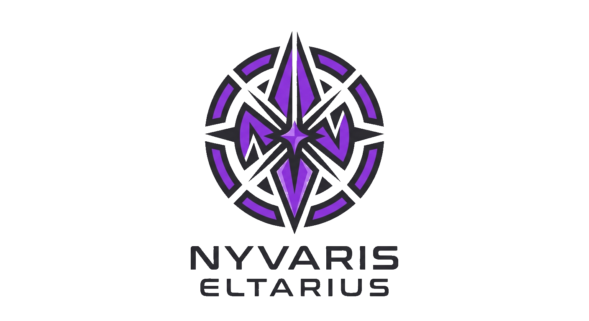

L'EMPIRE DE KUAT
FLOTTE AQUIS 7E ARMÉE • TERMINAL DATAPAD HOLONET
AFFILIATION : CONSEIL SOUVERAIN DE KUAT
LIAISON : SYNCHRONISATION FLOTTE EN COURS
CANAL RADIO : discord.gg/gP6PTu6hmz
LIAISON : SYNCHRONISATION FLOTTE EN COURS
CANAL RADIO : discord.gg/gP6PTu6hmz
SECTEUR / CARTE
CHARGEMENT...
CAPACITÉ FLOTTE
--- SLOTS
PROTOCOLE
STARWARS RP
STATUT AUDIO
CANAL ACTIF
> EN ATTENTE DE PAQUETS HOLONET █
ARCHIVE MÉMOIRE R2-D2 EN ATTENTE
Place ton image dans le dossier du loading screen (ex: journal_r2_1.png)
et renseigne son nom dans la liste R2_JOURNAL_ENTRIES du fichier HTML.